MUSASHIYA
明治四十四年の創業から五代。旧日光街道に面したこの建物で、うなぎと川魚のお料理をお出ししております。
昼 11:00〜14:30／夜 17:00〜20:00｜月曜定休
（月曜が祝日の場合は営業することもございます）
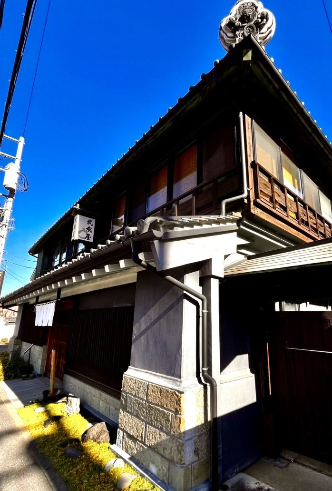
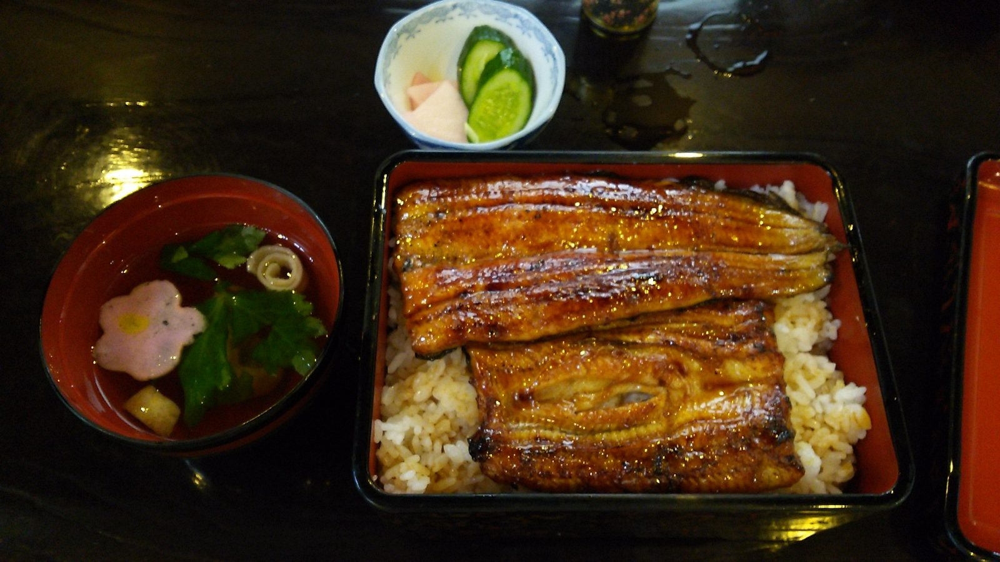
ご注文をいただいてからお焼きいたしますので、
少々お時間を頂戴しております。
お値段は、日々の仕入れにあわせて店内のお品書きに掲げております。その日のお値段も、焼き上がりまでのお時間の目安も、0280-22-5050 へお電話をいただけましたらお答えいたします。
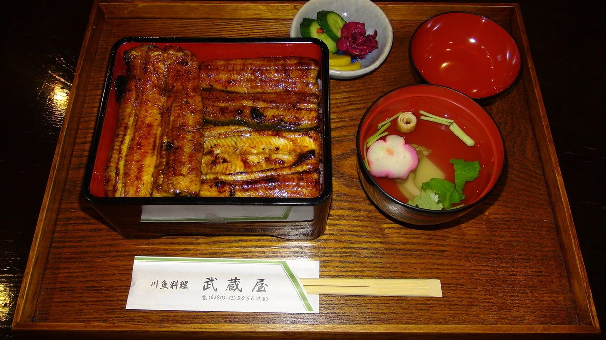
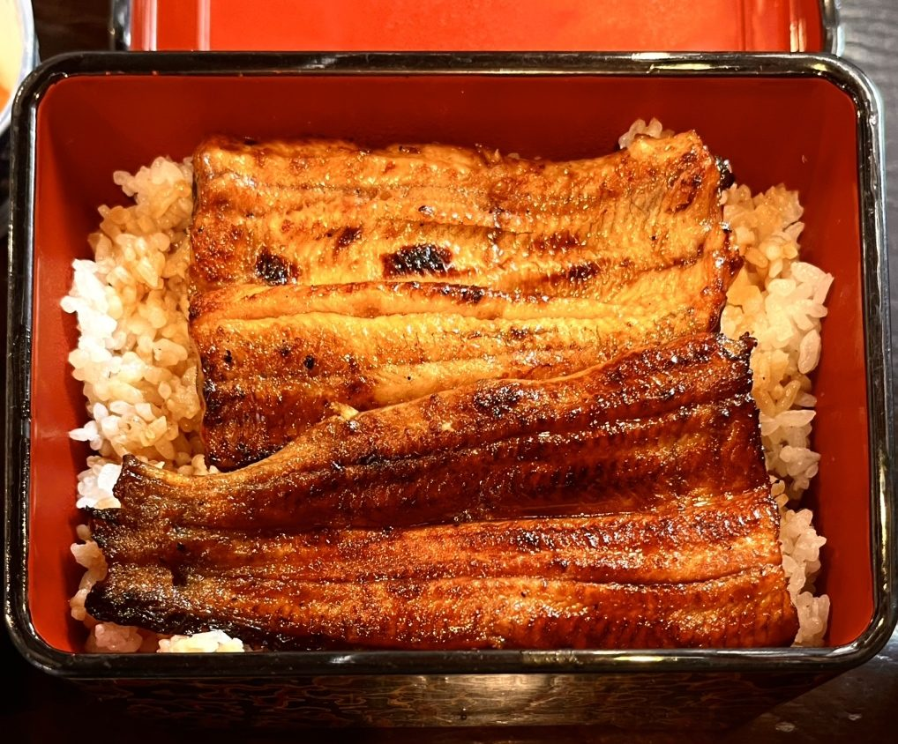
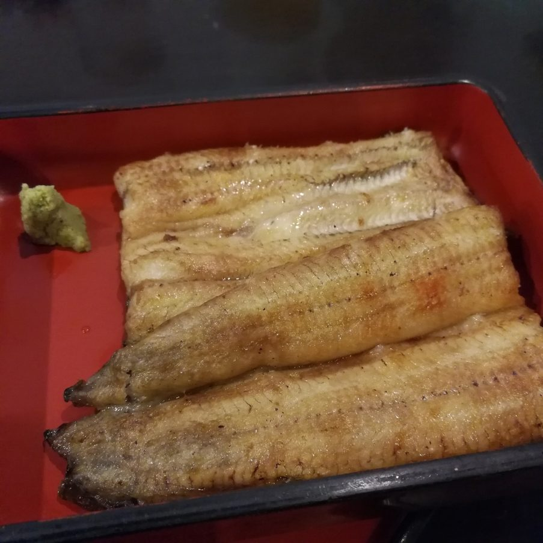
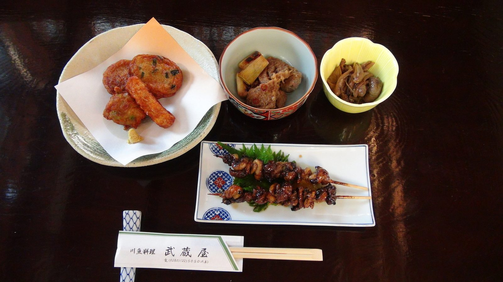
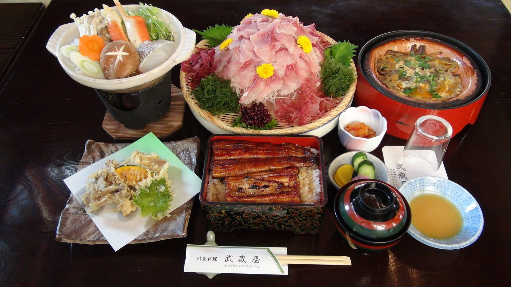
二階のお座敷は五名様から十五名様まで、一階のホールは十五名様から三十名様までお受けしております。貸切も承っております。
お料理は、おとうし・天ぷら・お鍋（冬季）・うな重・水菓子をお出ししております。季節により多少変わりますので、ご予算とあわせてご相談くださいませ。
三代目の昭和三十年から五十年代には、結婚式場を開いておりました。ご法要やお祝いの席も、どうぞお申し付けくださいませ。
お日にちとお時間、人数とご予算をお電話でお知らせくださいませ。お献立をご相談のうえ、お決めいたします。お席のご希望（お座敷か椅子席か）、お部屋を分けてのご用意も、あわせてご相談くださいませ。
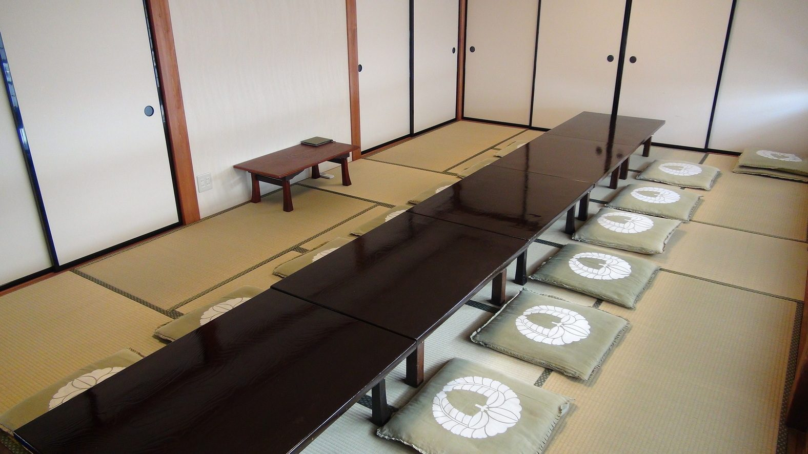
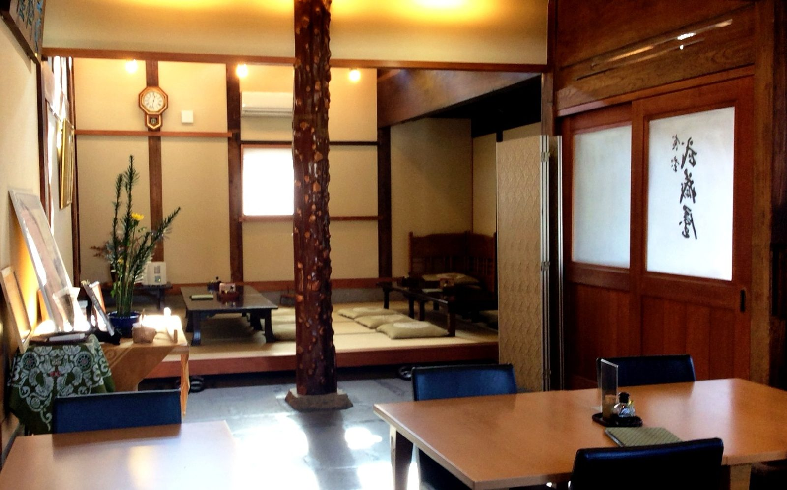
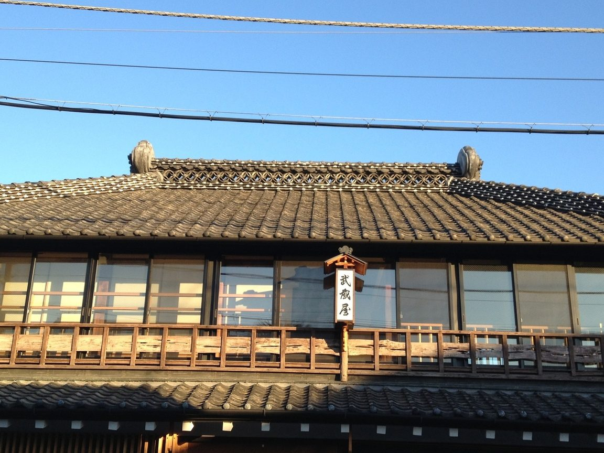
旧日光街道に面したこの建物は明治中期に建てられたもので、築百三十年を超えます。創業以前の遊郭を偲ばせる部分を残し、影盛付の鬼瓦に輪違い瓦を組み込んだ大棟を持つ屋根です。当時の古い瓦を復元いたしました。
土蔵造りの町屋としては珍しい造りになっております。
隣に市の施設「はなももプラザ」が建つのを機に、平成二十二年十一月より大規模に模様替えをし、平成二十三年十二月十日に新装開店いたしました。
国登録有形文化財（建造物）に登録されております（平成二十五年六月二十一日・登録番号第08-0256号）。お食事のあいだ、どうぞ天井や柱もご覧くださいませ。
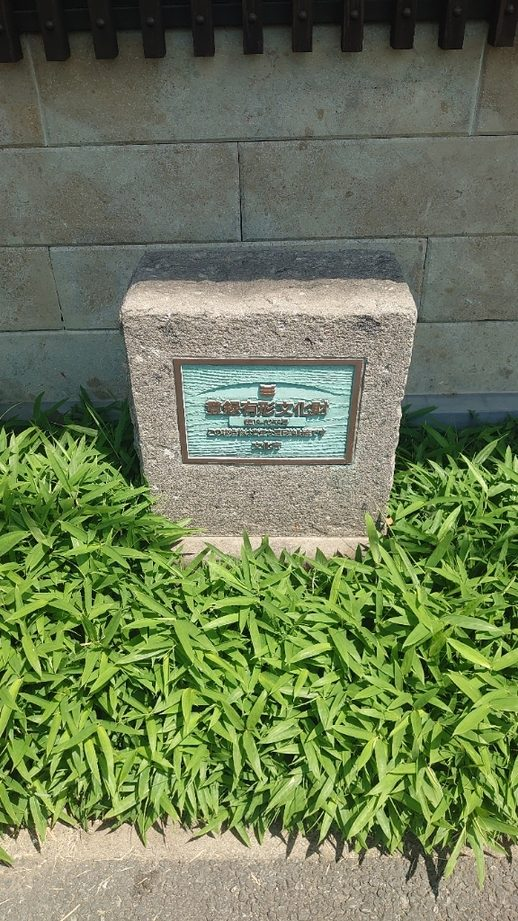
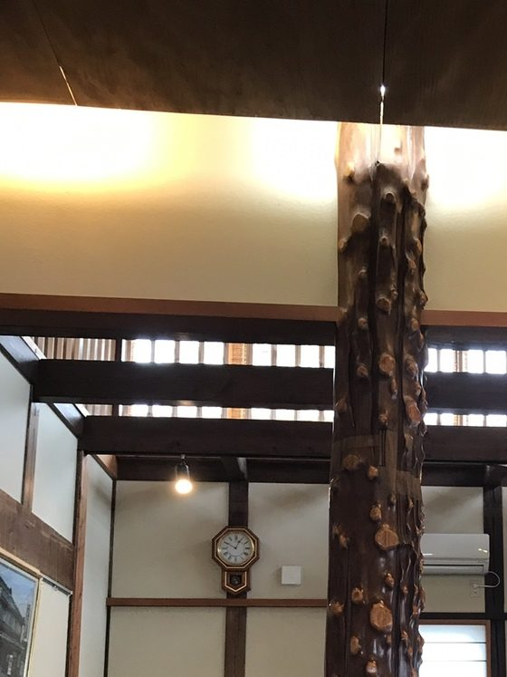
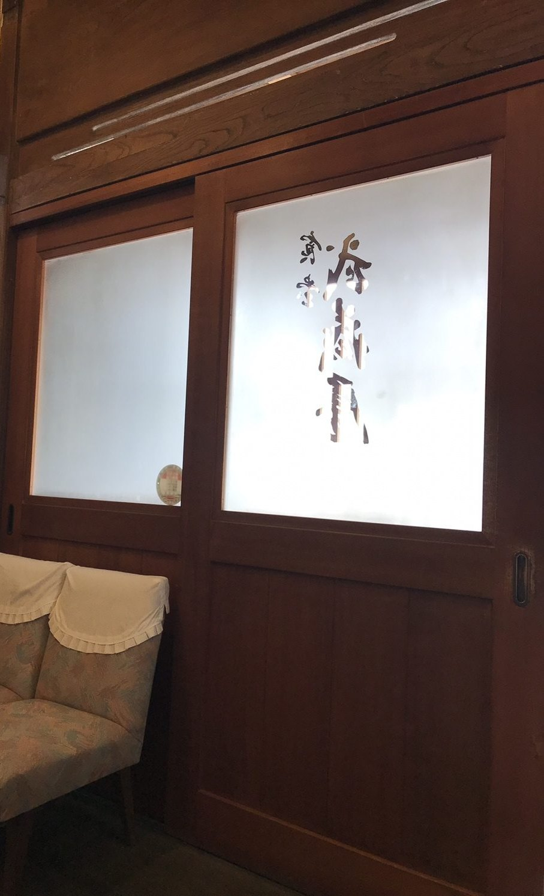
当店は横山町（よこまち柳通り）にございます。古河駅西口より徒歩八分、隣は地域交流センター「はなももプラザ」でございます。
店の裏に二十台ほどの駐車場をご用意しておりますので、お車でもお気軽にお越しくださいませ。
古河は室町時代の中頃より関東の要地で、日光街道の宿でもございました。渡良瀬川や近辺の沼で獲れた川魚が、行き交う人々の口を楽しませてまいりました。川魚料理には数百年の歴史がございます。
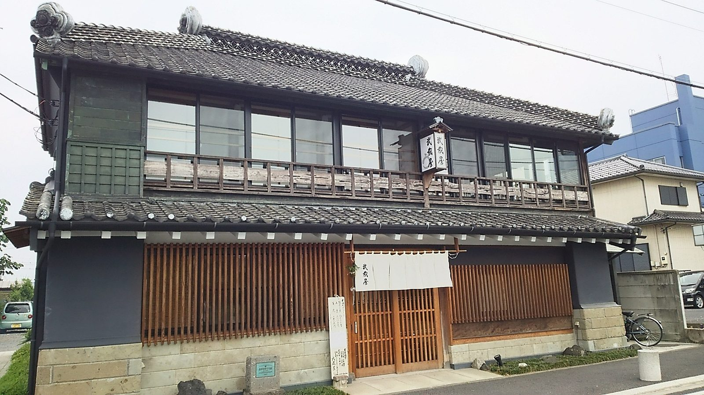
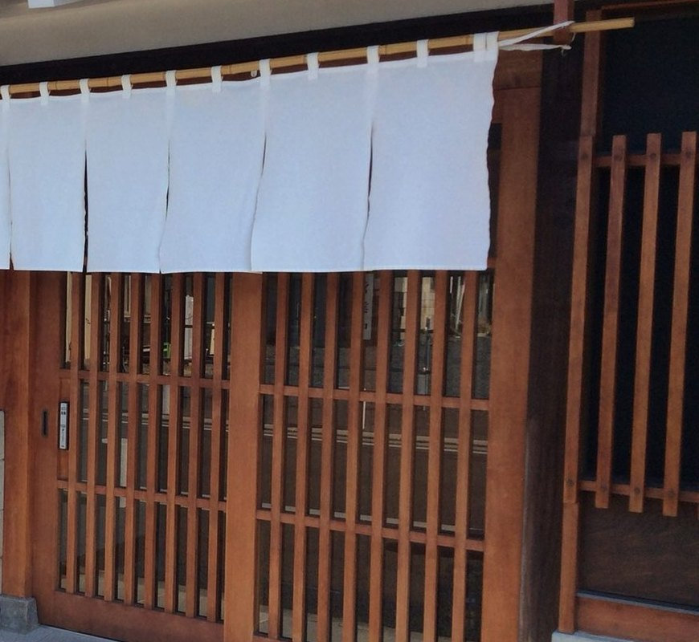
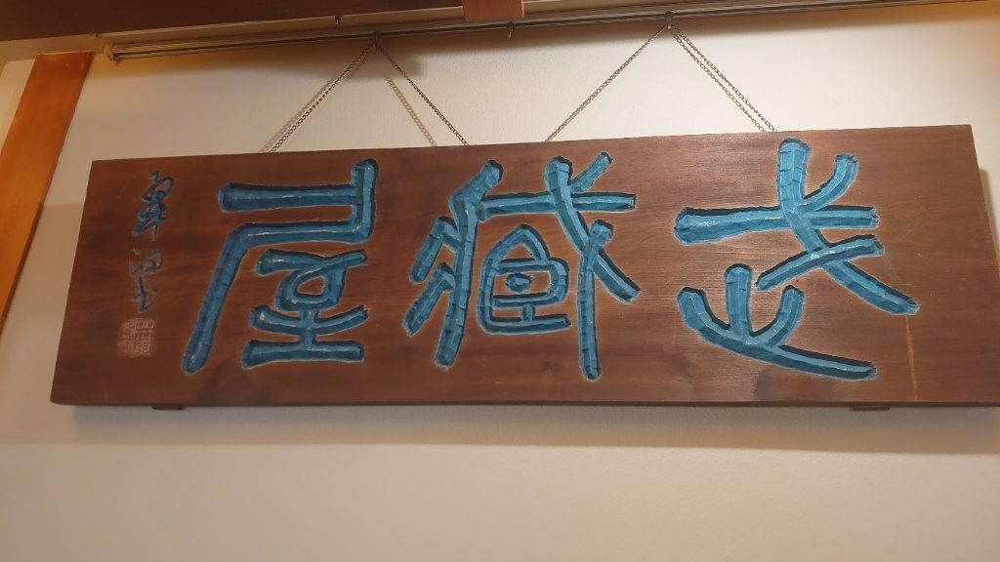
私は郷土史家でもございます。ご来店の際にお申し付けいただけましたら、古河の歴史をご説明させていただきます。時間帯によりご説明できないこともございます。何卒ご容赦くださいませ。
「ここで結婚式をやったのよ」という声に支えられ、感謝の気持ちで百年が過ぎました。これからも、この建物とともにお待ちしております。
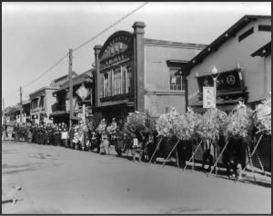
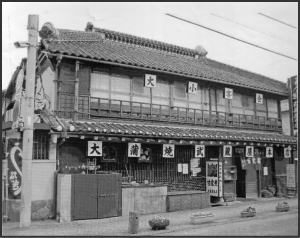
「築100年を超える有形文化財の建物に本格的な川魚料理。これ以上なにを求めるのでしょうか？」
お客様の声より
「うなぎはフワフワの食感で、表面は香ばしく焼けていて、たまらなく香ばしい香り。他ではなかなか味わえない美味しさです。」
お客様の声より
「うなぎで有名な古河市の中でも、老舗の中の老舗。張りがあって、中ふっくら。好きなタイプ。」
お客様の声より
| 店名 | 武蔵屋（むさしや） |
|---|---|
| 住所 | 〒306-0022 茨城県古河市横山町1-2-15 |
| 電話 | 0280-22-5050 |
| 営業時間 | 11:00〜14:30／17:00〜20:00 |
| 定休日 | 月曜日（月曜が祝日の場合は営業することもございます） |
| お席 | お座敷・テーブル席。二階のお座敷は五名様〜十五名様、一階のホールは十五名様〜三十名様。貸切も承ります |
| 駐車場 | 店の裏に二十台ほど |
| お支払い | 現金・PayPay（クレジットカードはご利用いただけません） |
| 禁煙・喫煙 | 全席禁煙 |
| アクセス | JR古河駅西口より徒歩八分。旧日光街道（よこまち柳通り）沿い、地域交流センター「はなももプラザ」の隣 |
Googleマップで経路を見る ｜駐車場は店の裏でございます。入口が分かりにくいときは 0280-22-5050 へお電話くださいませ。